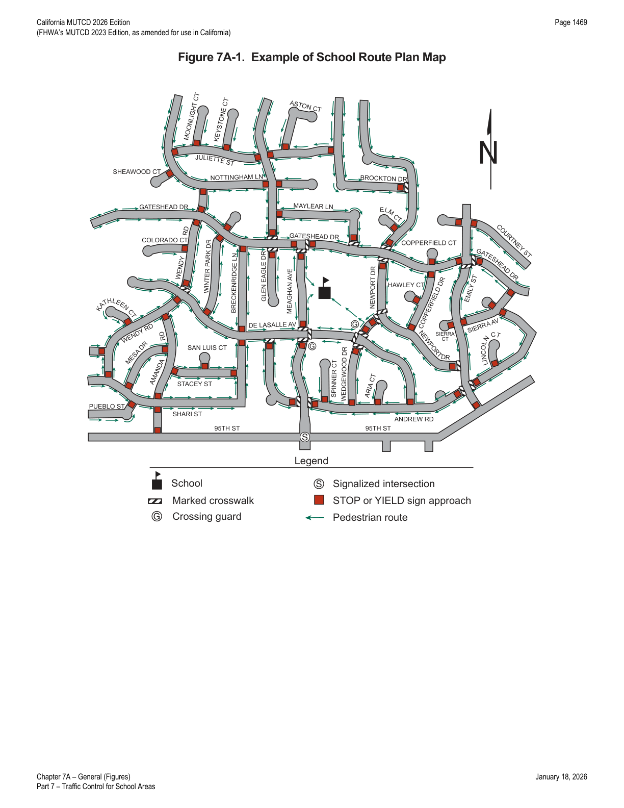

Part 7 · Traffic Control for School Areas · Chapter 7A
General
Introduces the purpose and scope of Part 7, and establishes the framework of a school route plan and school traffic control plan that ties together every device, marking, and supervision measure covered in Chapters 7B through 7D.
7A.01Introduction
- 01Part 7 sets forth basic principles and prescribes standards for the design, application, installation, and maintenance of all traffic control devices (including signs, signals, and markings) and other controls (including adult crossing guards) for the special pedestrian conditions in school areas.
In practice, Part 7 is applied on top of — not instead of — the general sign, marking, and signal provisions in Parts 2, 3, and 4; Chapters 7B through 7D describe school-specific devices, while the general chapters continue to govern related devices such as STOP signs, pedestrian hybrid beacons, and standard crosswalk design.
7A.02School Route Plans and School Crossings
- 01A school route plan for each school serving elementary to high school students should be prepared in order to develop uniformity in the use of school area traffic controls and to serve as the basis for a school traffic control plan for each school.
- 02The school route plan, developed in a systematic manner by the school, law enforcement, and traffic officials responsible for school pedestrian safety, should consist of a map (see Figure 7A-1) showing streets, the school, existing traffic controls, established school walk routes, and established school crossings.
- 03Bicycle use as a mode of transportation, as applicable, should also be considered if students biking to and from school are not allowed to use the sidewalks along the pedestrian route.
- 04The type(s) of school area traffic control devices used, either warning or regulatory, should be related to the volume and speed of vehicular traffic, street width, and the number and age of the students using the crossing.
- 05School area traffic control devices should be included in a school traffic control plan.

- 05aThe words "School Pedestrians," "Children," and "Students" are used interchangeably and could include student bicyclists for the purpose of determining appropriate crossing protection measures.
- 06To establish a safer route to and from school for schoolchildren, the application of planning criteria for school walk routes might make it necessary for children to walk an indirect route to an established school crossing located where there is existing traffic control, and to avoid the use of a direct crossing where there is no existing traffic control.
- 07The frequency of gaps in the traffic stream that are sufficient for student crossing is different at each crossing location. When the delay between the occurrences of adequate gaps becomes excessive, students might become impatient and endanger themselves by attempting to cross the street during an inadequate gap. In these instances, the creation of sufficient gaps needs to be considered to accommodate the crossing demand.
- 08School walk routes should be planned to take advantage of existing traffic controls.
- 09The following factors should be considered when determining the feasibility of requiring children to walk a longer distance to a crossing with existing traffic control:
- A. The availability of adequate sidewalks or other pedestrian walkways to and from the location with existing control,
- B. The number of students using the crossing,
- C. The age levels of the students using the crossing, and
- D. The total extra walking distance.
- 10A School Crossing signal warrant is provided in Section 4C.06.
- 11Street closures are authorized by local ordinance or resolution on streets crossing or dividing school grounds when necessary for the protection of persons attending the school. Refer to CVC § 21102.
- 12Engineering studies determine the appropriate measures developed at school crossings. The devices and treatments described herein are for use in school zones and do not preclude use of other devices and treatments described elsewhere in this document.
- 13Types of school pedestrian measures that can be considered can include:
- A. Warning signs and markings.
- B. School speed limits.
- C. Intersection stop signs.
- D. Flashing yellow beacons.
- E. Traffic signals.
- F. Pedestrian Hybrid Beacons.
- G. Remove visibility obstructions.
- H. School Safety Patrol.
- I. Adult Crossing Guard.
- J. Pedestrian separation structures.
- K. Pedestrian walkways along the roadway.
- L. Pedestrian walkways separated from the roadway.
- M. Parking controls and curb-use zones.
- 14Refer to CVC § 21373 for school board request for traffic control devices.
- 15Upon request of the local school district, responsible traffic authorities investigate all locations along the school route and recommend appropriate traffic control measures. Refer to CVC § 21373.
- 16The following references from the California Vehicle Code relate to traffic controls for school areas:
- A. Section 377 – Limit Line.
- B. Section 627 – Engineering and Traffic Survey.
- C. Section 21102 – Local Authority to Close Streets.
- D. Section 21368 – Crosswalks Near Schools.
- E. Section 21372 – Guidelines for Traffic Control Devices Near Schools.
- F. Section 21373 – School Board Request for Traffic Control Devices.
- G. Section 21458 – Curb Markings.
- H. Section 21949 through 21971 – Pedestrians' Rights and Duties.
- I. Section 22350 – Basic Speed Law.
- J. Section 22352 – Prima Facie Speed Limits.
- K. Section 22358.4 – Decrease of Local Limits Near Schools or Senior Centers.
- L. Section 22504 – Unincorporated Area Parking; School Bus Stops.
- M. Section 40802 – Speed Traps.
- N. Section 42200 – Disposition by Cities and Other Local Entities.
- O. Section 42201 – Disposition by County.
In practice, the school route plan map (Figure 7A-1) is the working document that a traffic engineer and school district revisit annually — it drives where crossing guards are posted, which approaches need STOP/YIELD control, and where the marked, supervised route runs even if it is not the most direct path from a given neighborhood.
★ Key Takeaways — Chapter 7A
- Part 7 governs the design, application, installation, and maintenance of every device and control used for special pedestrian conditions in school areas — signs, signals, markings, and adult crossing guards alike — and supplements, rather than replaces, the general provisions in Parts 2–4.
- A school route plan (map of streets, school, existing controls, walk routes, and crossings) should be prepared for every school serving elementary through high-school students, developed jointly by school, law enforcement, and traffic officials, and should feed into a school traffic control plan.
- Planning criteria may direct children toward an indirect but controlled crossing rather than a shorter uncontrolled one; feasibility should weigh sidewalk availability, number and age of students, and total extra walking distance.
- Twelve categories of school pedestrian measures are available for engineering studies to consider, from warning signs and reduced speed limits through pedestrian separation structures and parking/curb-use controls.
- Fifteen California Vehicle Code sections (§§ 377, 627, 21102, 21368, 21372, 21373, 21458, 21949–21971, 22350, 22352, 22358.4, 22504, 40802, 42200, 42201) provide the legal backbone for school-area traffic control.